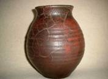
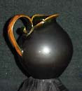
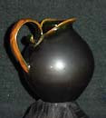
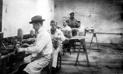

An Introduction to Danish Ceramics and Potters VI
Potteries and Potters around Horsens (Eastcoast
of Jutland)

Niels Peter Nielsen (1888-1968, Potter): Pottery
in Egebjerg by Horsens (1909-1918); The ceramic factory D A N I
C O, Horsens (1919-1929); Dagnaes Pottery, Dagnases by Horsens (1930-1946)
and in Torsted by Horsens (from 1947).
After he finished his education as a potter at Annashaab,
Niels Peter Nielsen in 1909 established his own pottery in Egebjerg
outside Horsens. At the pottery he produced, pots, bowls, Pickle
Pots, Plates, vases and sculptures. The things from Egebjerg are
marked with a presses "N.P.NIELSEN, EGEBIERG" or an "NP"(written
together).
Later Nielsen got acquainted to the storekeeper Corfitzen from
Horsens and they decided to start a ceramic factory, with Nielsen
as president and Corfitzen as financier. The factory was named DANICO
(DAnish, NIelsen and Corfitsen) and started production in 1919.
They produced things for decoration, bowls, vases, centerpieces
and
flowerpots.
 
The two potters Karl Hansen and Frederik Jørgensen, who
both came from Herman A. Kähler, were employed and they stamped
the design, decoration and production. They decorated with horn
painting and flower ornamentation in Skønvirke style, whish
is the Danish version of the French art noveau (1890-1910) which
came to Denmark a bit later.
Among the employees was also potter Leon Dissing (1897-1986) who
later had his own pottery in Horsens.
   
With the common decoration in blue and green on a white/yellow
background, it can be difficult to see the difference between things
from Kähler and Danico. Only the pressmark "HAK"
shows if it's "a Kähler". Kähler items were
always marked.
One can understand that they found that likeness rather tiresome
at
Kählers.
 
The two potters from Kähler are no doubt very skilled, the
horn painting
was a difficult technique. A hollowed cow horn, with a goose quill,
was filled up with the slip. The potter then painted with the cow
horn by dosing the slip through the goose quill, using it as a pen.
The artistic leader was Eiler Løndal (1887-1971). Maybe
he didn't get the possibilities and the free rein that his talent
needed and required, because already in 1922 he quit. It is said
that he destroyed all his forms before leaving, so he must have
been rather displeased.
A good part of the production were exported via agents also in
USA.
The things from Danico are often, but not always stamped with a
pressed DANICO. They are always marked with a number. The guideline
is that the numbers from 1 to 499 and from 800 and up are from DANICO
while the numbers from 500 to 799 are from Annashaab. Sometimes
the things are only marked with a number. As Einer Løndal
later also marked the things he produced in Aarhus also only with
a number it can be rather difficult to know the difference.

Eiler Løndal (foreground) and Frederik Jørgensen
(sitting towards back) at Danico.
Part 1 > Jens
Michael Andersen
Part 2 > L.Hjorts Terracotta
Factory, Roenne, Bornholm
Part 3 > Soeholm, Roenne on
Bornholm
Part 4 > P. Ipsens Enke, Copenhagen
Part 5 > Kongstrands Pottery,
Esberg
Part 6 > Potteries and Potters around Horsens
Danish Ceramics VII - The Turn of the Century
Article kindly supplied by Tove Jespersen Klitgaarden
Antique & Ceramics, Denmark. www.Klitgaarden.net
e-mail: Klitgaarden@tdcadsl.dk
More Articles
|


{kind=link}
{kind=link}
{kind=link}
{kind=link}
{kind=link}
{kind=link}
{kind=link}
{kind=link}
{kind=link}